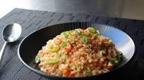

Phasellus augue odio, molestie eu tempor eget, molestie in nulla. Fusce ornare pellentesque dui, vel sodales ligula consequat in. Aliquam condimentum diam dolor, vel rhoncus magna viverra nec. Donec urna augue, imperdiet non cursus finibus, scelerisque ut enim. Integer congue, nulla et finibus efficitur, neque turpis viverra sem, at finibus nulla ante sit amet diam. Nunc faucibus pharetra augue sed finibus. Integer mattis vestibulum mauris sit amet viverra. Aliquam erat volutpat. Mauris vehicula orci sit amet orci eleifend, ut efficitur orci scelerisque. Etiam euismod bibendum lectus vitae dictum.
Integer varius ut libero nec laoreet. Fusce pulvinar augue non lorem ornare, non pretium orci semper. Duis sagittis lacinia turpis, a tempus lectus sodales sed. Nunc vitae cursus mi, et vestibulum ante. Suspendisse sapien nisl, porttitor quis quam in, pulvinar euismod urna. Praesent malesuada purus quis lobortis venenatis. Nam molestie, lacus sit amet semper gravida, neque nulla lacinia velit, dictum interdum mauris eros et ex. Aliquam congue posuere lectus elementum dignissim. Class aptent taciti sociosqu ad litora torquent per conubia nostra, per inceptos himenaeos. Interdum et malesuada fames ac ante ipsum primis in faucibus. Sed ligula lacus, pretium id varius et, congue vitae odio. Fusce in quam imperdiet, pulvinar purus feugiat, congue mauris. Morbi ultricies eu purus quis tincidunt. Nullam erat risus, porta non pharetra in, venenatis quis lorem. Etiam commodo augue id nibh euismod, eu cursus neque vehicula.
Suspendisse fermentum ut lorem fringilla pulvinar. Etiam ultrices sit amet neque eget lobortis. Nulla vehicula ligula turpis, eget porta lectus consequat bibendum. Praesent facilisis justo odio, eu rhoncus quam pulvinar at. Maecenas quis tellus at risus blandit sollicitudin. Donec odio quam, posuere nec blandit eu, mollis nec nulla. Pellentesque habitant morbi tristique senectus et netus et malesuada fames ac turpis egestas. Vestibulum tristique lacus ullamcorper, auctor sem a, dictum arcu.